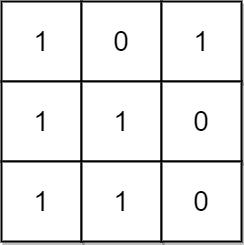
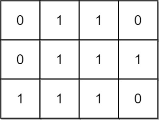

1504. 统计全 1 子矩形
逐行维护「往上连续 1 的高度」柱状图，每行用单调栈 O(n) 数出以该行为底的矩形数并累加。
思路
h[j]= 从当前行往上连续 1 的高度（遇 0 清零）；每个全 1 矩形恰好在它的底边行被统计一次，不重不漏。- 右下角在
(本行, j)的矩形数acc[j] = h[j]×(j−left) + acc[left]：left是栈里留下的、高度严格小于h[j]的最近列。 - 弹栈条件用
≥（栈内严格递增），保证h[left] < h[j]，公式里「本段新矩形」和「更左延伸」两部分才不重叠。 - 每行把
acc求和累进答案，总体 O(mn)。
图解
最优解
1class Solution {2 public int numSubmat(int[][] mat) {3 int m = mat.length, n = mat[0].length;4 int[] h = new int[n]; // h[j]：从当前行往上连续 1 的高度5 int ans = 0;6 for (int i = 0; i < m; i++) {7 for (int j = 0; j < n; j++) h[j] = mat[i][j] == 1 ? h[j] + 1 : 0;8 ans += countRow(h); // 加上以本行为底的全 1 矩形数9 }10 return ans;11 }12 13 // 单调递增栈：acc[j] = 右下角在第 j 列、以本行为底的全 1 矩形数14 private int countRow(int[] h) {15 int n = h.length, sum = 0;16 int[] stack = new int[n + 1];17 int top = 0; // 栈里放下标，对应高度严格递增18 int[] acc = new int[n];19 for (int j = 0; j < n; j++) {20 while (top > 0 && h[stack[top - 1]] >= h[j]) top--;21 int left = top > 0 ? stack[top - 1] : -1;22 // 宽度 (j-left) 内每个高度 ≤ h[j] 的矩形都成立，再接上更左处已算好的 acc[left]23 acc[j] = h[j] * (j - left) + (left >= 0 ? acc[left] : 0);24 sum += acc[j];25 stack[top++] = j;26 }27 return sum;28 }29}题目
给你一个 m x n 的二进制矩阵 mat ，请你返回有多少个 子矩形 的元素全部都是 1 。
示例 1：

输入：mat = [[1,0,1],[1,1,0],[1,1,0]] 输出：13 解释： 有 6 个 1x1 的矩形。 有 2 个 1x2 的矩形。 有 3 个 2x1 的矩形。 有 1 个 2x2 的矩形。 有 1 个 3x1 的矩形。 矩形数目总共 = 6 + 2 + 3 + 1 + 1 = 13 。
示例 2：

输入：mat = [[0,1,1,0],[0,1,1,1],[1,1,1,0]] 输出：24 解释： 有 8 个 1x1 的子矩形。 有 5 个 1x2 的子矩形。 有 2 个 1x3 的子矩形。 有 4 个 2x1 的子矩形。 有 2 个 2x2 的子矩形。 有 2 个 3x1 的子矩形。 有 1 个 3x2 的子矩形。 矩形数目总共 = 8 + 5 + 2 + 4 + 2 + 2 + 1 = 24 。
提示：
1 <= m, n <= 150mat[i][j]仅包含0或1
题面取自力扣当前版本。
数据快照 2026-11-04。题面版权归力扣所有，本站点仅供本人学习使用，请勿对外发布。